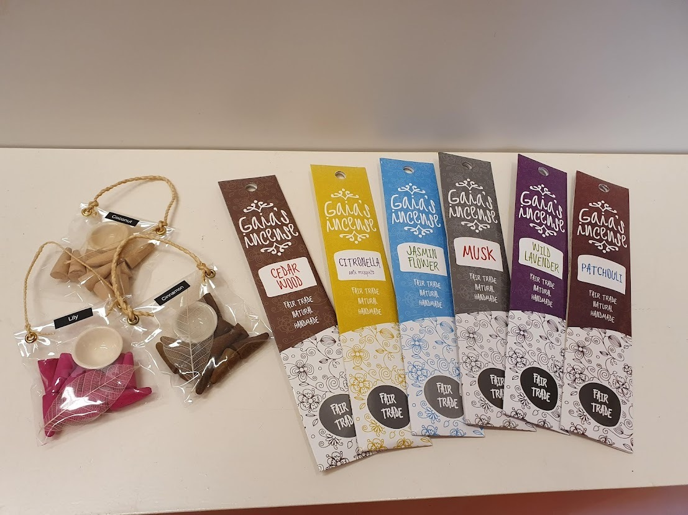

Wierook
Terug

Wierook uit India.
Deze wierook wordt handgemaakt en Fair Trade. Ze worden ambachtelijk gemaakt door een groep vrouwen uit een achterstandsgebied in het Zuiden van India. De vrouwen ontvangen hiervoor een eerlijk loon.